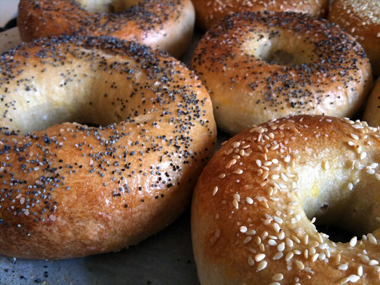

Bagels

Description
A recipe for making bagels. Taken from Kibitz Spot.
Ingredients
- 1 ¼ cups lukewarm water
- 1 teaspoon salt
- 1 Tablespoon brown sugar (okay to substitute white sugar)
- 1 Tablespoon yeast
- 2 tablespoons olive, canola, or other light oil
- 4 cups white flour
Directions
- Mix water, salt, sugar, and yeast in a large bowl and let sit for 10 minutes.
- Add remaining ingredients.
- Mix until it forms a single dough ball.
- Knead the dough for 10 minutes.
- Measure out 100 grams per bagel and form into rings by rolling in your palm and connecting the ends.
- Place bagel rings on a baking paper-lined baking sheet. Let rise for 40-50 minutes.
- Boil bagel rings one minute on each side. (We boil two at a time and use a flat spatula to flip them in the water and remove them from the pot.)
- Place on a wire rack to allow water to drip off (about 5 minutes).
- Place the boiled bagel on an oiled baking sheet (okay to use baking paper instead of oil).
- Bake 20 minutes at 350°F (180°C) or until golden brown.
Return